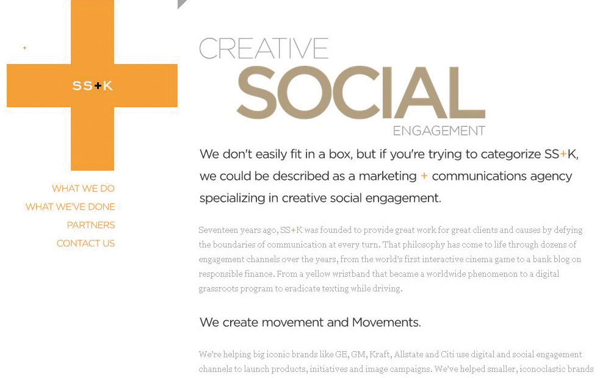
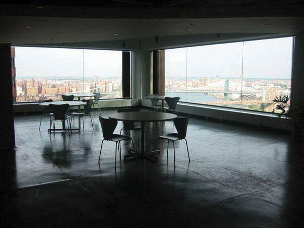
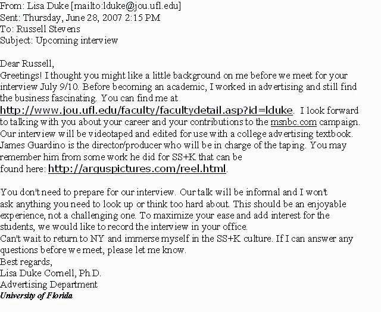
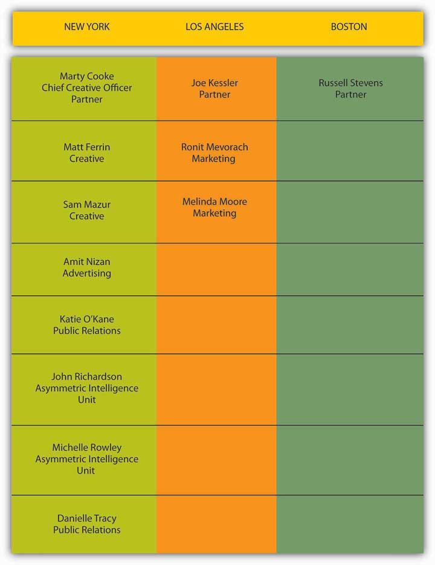

After studying this section, students should be able to do the following:
Get to know Shepardson, Stern and Kaminsky (SS+K) as it works on a campaign for msnbc.com, a media brand in search of an identity. SS+K opened its doors in 1993 and now has offices in New York, Boston, and Los Angeles. With over $70 million in billings, SS+K is an independent agency owned by its partners, with a minority ownership by Creative Artists Agency (CAA)—perhaps the most powerful talent and literary agency in the world. CAA also owns the Intelligence Group, a market research and trend forecasting company.
Figure 1.3
SS+K’s Web site is an immersive introduction to the history and offerings of the agency. You can find it at ssk.com.
For this text, we interview the agency partners, the creative director, the account people, the creative team (copywriter and art director), the public relations experts, the account planners and research specialists, and the digital professionals who took the msnbc.com campaign from pitch to completion. And, a member of our author team knows this agency up close and personal: Amit Nizan was the account manager at SS+K who lived and breathed the msnbc.com campaign. A 2003 graduate of the renowned undergraduate advertising program at the University of Florida, Amit will help us take you through the planning and execution of this campaign as a young, dynamic advertising professional actually experienced it. Not too long ago she was a student just like you, so she feels your pain!
Through their words and documents you will follow, step by step, the thirteen-month process of bringing SS+K’s campaign vision of “A Fuller Spectrum of News” to light. To allow us to bring you the inside story on how the agency created the msnbc.com campaign, msnbc.com and SS+K granted FWK full access to its creative work, internal processes, and employees. The result is a resource that offers new ways to teach and talk about the real world of advertising with course content that is affordable, accessible, timely, and relevant. Welcome to advertising education on steroids.
SS+K was founded in 1993 by three former political consultants—Rob Shepardson, Lenny Stern, and Mark Kaminsky—and a famous copywriter, David McCall. To this day, the agency is a mash-up of those roots in politics and creativity, bolstered by a dose of entertainment marketing via its partnership with CAA and the staff’s passion to learn and apply the latest technology. SS+K has become a haven for talented refugees from every corner of the communications world.
SS+K offers a full array of services to its clients, including advertising, marketing, design, public relations, public affairs, and research. Although many ad agencies, PR firms, and marketing consultancies endorsed integrated strategies over the last decade, SS+K believes that most agencies have built-in biases toward one type of solution. They tend to treat “integration” as an item on a check-off list. Ad agencies think in terms of ads. PR shops generate PR ideas. And so on…but not SS+K. For them, it is about delivering the right message at the right time to the right audience with the right medium. They call their approach to these types of media-neutral ideas Asymmetric CommunicationsSS+K’s trademarked technique of mapping their client’s issue, brand, competition, and target audience to develop a big idea that will drive their marketing and communications.. Their perspective encourages the agency to “think outside the box” by employing a mix of traditional and new media (like urban games) to engage the audience in surprising ways and uncover opportunities to connect with them.
Figure 1.4 View of the Brooklyn Bridge from SS+K’s New York Office
This perspective is a consumer-centric approach the agency uses to find unique and surprising ways for clients to connect with and engage their target audiences. For example, instead of using traditional methods and messaging to increase awareness of Qwest Wireless among high school students, Qwest worked with SS+K to design an urban game called ConQwest that involved teams of students, newly created semacodes for use on cell phones, and giant inflatable game pieces. Semacode is a trade name for machine-readable two-dimensional black and white symbols that act as “barcode URLs.”
True to their political roots, the agency consulted with the Obama presidential campaign on driving more interest and participation among young voters. Since its inception, SS+K has maintained a high-profile nonprofit business, including work with UNICEF, Share Our Strength, the Bill & Melinda Gates Foundation, and the Lance Armstrong Foundation’s “LIVESTRONG” campaign.
The agency understands how to work with short lead times and mine for deep consumer insights that animate its work. It’s a combination that has made SS+K increasingly popular with a growing roster of clients, including Delta Airlines, Credo Mobile, Polo Ralph Lauren, AutoMart—and our client for this book, msnbc.com.
After fifteen years in business, all three founding partners—Rob Shephardson, Lenny Stern, and Mark Kaminsky—are still active in the firm, and they’ve added other key partners such as Executive Creative Director Marty Cooke to continue to provide fresh ideas and leadership.
Figure 1.5 The Partners of SS+K
Here’s how we got started: once SS+K agreed to participate in this unique partnership, it was time for us to become familiar with the campaign. First, our intrepid author Lisa Duke Cornell reaches out to Russell Stevens, a partner at SS+K.
Figure 1.6
Follow the e-mail trail.
Dr. Duke Cornell flew up from Gainesville (where she teaches advertising at the University of Florida) and came in to meet the whole SS+K crew, teach them a little about Unnamed Publisher, and learn a lot about SS+K. Throughout the text, you will find links to the interviews Dr. Duke Cornell conducted with the team based in New York. In addition, she interviewed key team members from the Los Angeles and Boston offices.
Amit Nizan joined the author team in the spring of 2008. Drawing on personal knowledge of the agency and the msnbc.com account, Ms. Nizan immersed herself in the interviews and information the team provided to Dr. Duke Cornell.
Launch! unfolds chapter by chapter across a timeline for msnbc.com’s first branding campaign. Before we get into that, let’s meet the full cast of characters who worked on the msnbc.com account with Ms. Nizan.
Figure 1.7
Meet the core SS+K Team assigned to the msnbc.com account.
Additional SS+K employees worked on aspects of the msnbc.com account, including Jeannie O’Toole (Head of Print Production), John Kirkwood (Web and Video Production), Tim Player (Studio Manager), Kelly Kraft (Project Manager), Amy Gaiser (PR), Janetti Chon (PR), Aaron Taylor-Waldman (Studio Designer), Alice Ann Wilson (Head of Design), Natalie Cho (Designer), Sonya Fridman (Designer), Joe Sayaman (Copywriter), and Rochelle Ardesher (Project Manager).
As you can see, it takes a village to work on an account. Each of the people beyond the core team contributed their respective expertise to the production and execution of the first-ever msnbc.com branding campaign.
How is an ad agency not an ad agency? SS+K does not consider itself an advertising agency, but instead a creatively-driven strategic communications firm that solves problems through a variety of innovative techniques—including but not limited to traditional advertising approaches. You’re going to see throughout this book that SS+K is not alone in this regard—the advertising industry seems to change its stripes almost daily as new technologies and trends evolve!
As a remnant from SS+K’s founders’ days as political consultants the agency uses an integrated modelA full array of services offered to clients including advertising, marketing, design, public relations, public affairs, and research.. SS+K is media-agnosticWillingness to use any medium or discipline to solve a client’s problem as long as the solution delivers the right message at the right time to the right audience with the right medium.; this means it doesn’t care what medium or discipline it uses to solve a client’s problem as long as the solution delivers the right message at the right time to the right audience with the right medium.
Working Together
(click to see video)Marty Cooke explains how different disciplines mesh at SS+K.
Welcome to a new model of textbook learning. This book is different from others in two really important ways:
The SS+K agency is going to help us learn how to do advertising by actually doing advertising. Follow along with us as we chronicle its efforts to win the important msnbc.com account and then deliver on its strategy to make this media brand the source of news for the customers the site hopes to reach.